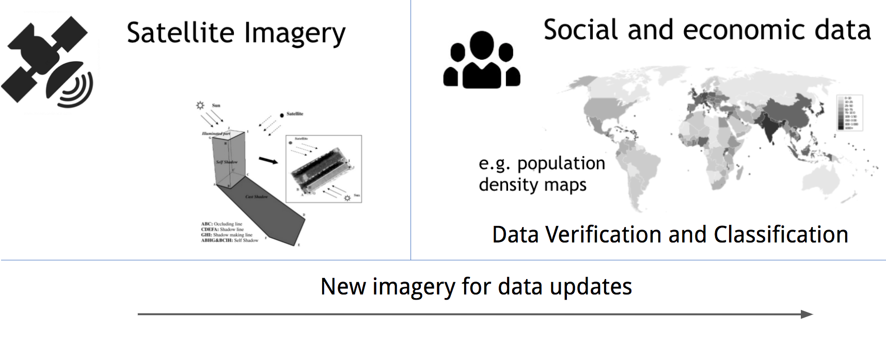
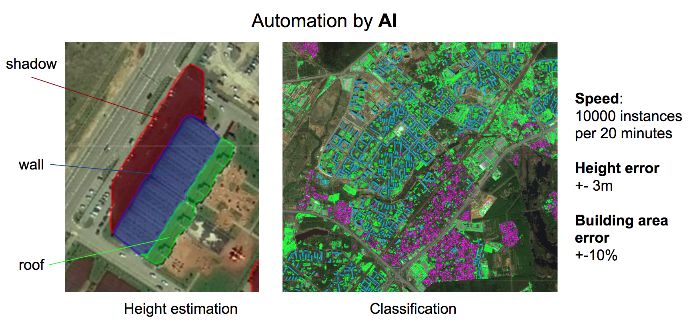
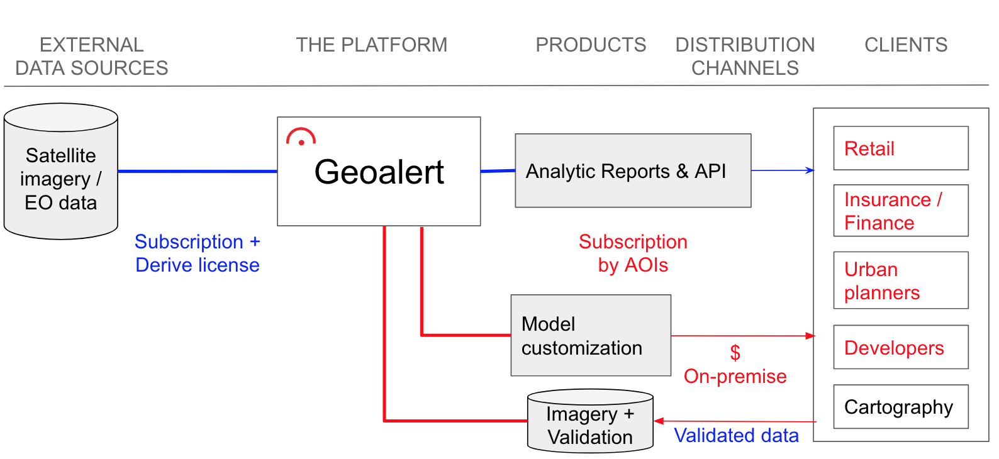
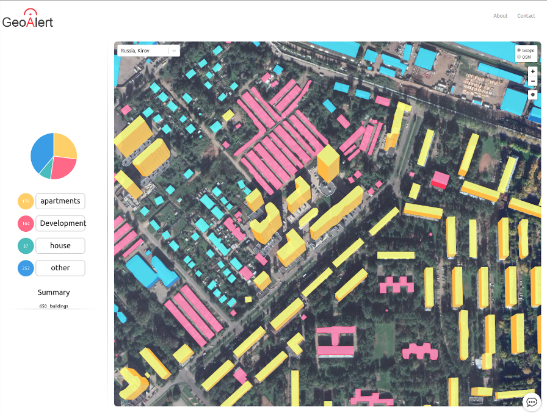
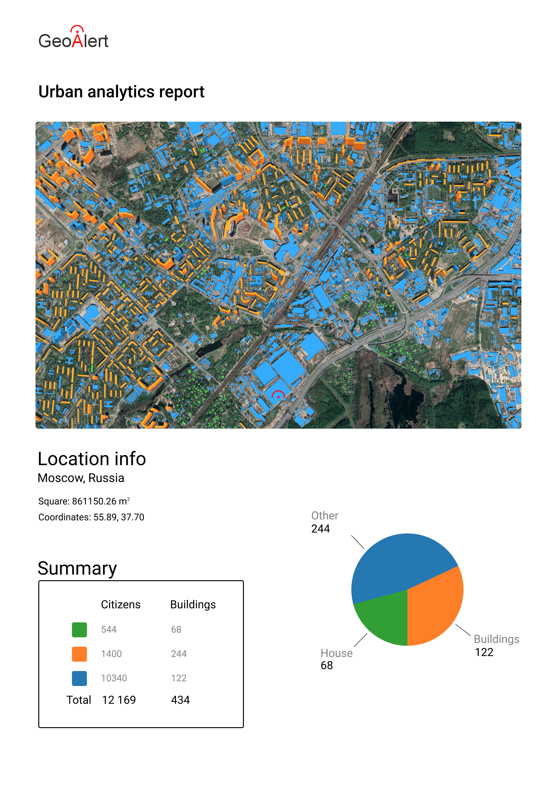
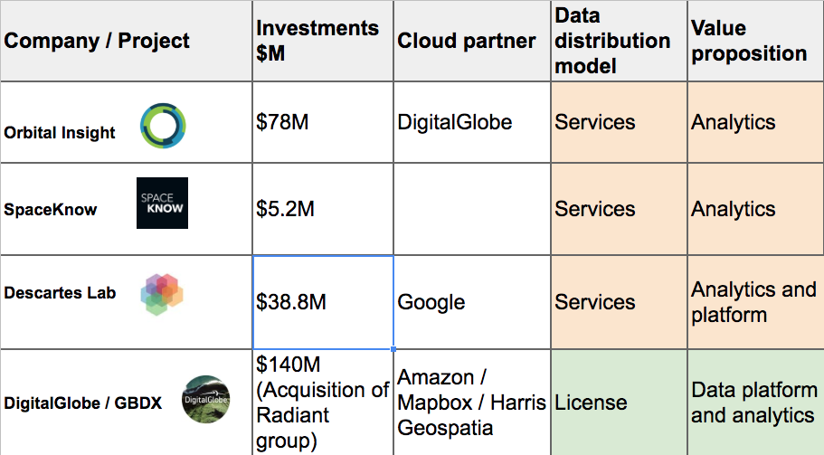

Urban AI Monitoring
 The Urban mapping from scratch is very slow and expensive: new and stereo imagery 30 - 60 USD / sq.km; Lidar from 200$ / sq.km;
The Urban mapping from scratch is very slow and expensive: new and stereo imagery 30 - 60 USD / sq.km; Lidar from 200$ / sq.km;
40K sq.km of Moscow region takes 1 year on manual mapping- Official data may be:
- Incomplete
- Out of date
- Restricted for public use (e.g. South Korea, China)
|
|

|
Geoalert is a platform for Urban infrastructure recognition and classification using data from Earth Observation systems
To inform urban planners, real estate, retail, insurers and development companies about residential infrastructure without time consuming and expensive survey
- → Aggregation of global imagery by cities agglomerations
- → Analytics of Urban infrasrtucture (models for buildings recognition and height estimation, single and stereo imagery)
- → Urban classification by types (houses, building apartments, industrial etc.)
- → Historical imagery analysis for change detection and calculation of "Urban development"

Urban Recognition Model
Demo App
city.geoalert.ioBusiness model

Geoalert ConnectGet data via API GET reports within your polygon area  |
Geoalert ReportsDownload and subscribe for Alerts and full-text Reports by Email  |
Earth Observation analytics market

The prospects of EO Market are related to analytic services ($15 bln)
Our team
 | Georgy Potapov – CEO | Bio: Started "Kosmosnimki" (SCANEX), Fires.ru; 10+ years in GIS / Remote sensing / Web Development | Vladimir Ignatiev – Head of Research | Ph.D., Head of the AeroNet Lab at Skoltech. Project coordinator. Basketball team captain | |
| Alex Trekin – RnD projects, Data science team lead | Ph.D., Lead researcher in Machine Learning and Remote Sensing. Master of swords |
Arnaud Trousset – Business development | Founder and CEO at Rilos (Geomatrix), 10+ years in Travel / Retail industry and Geomarketing Chanson singer and musician |